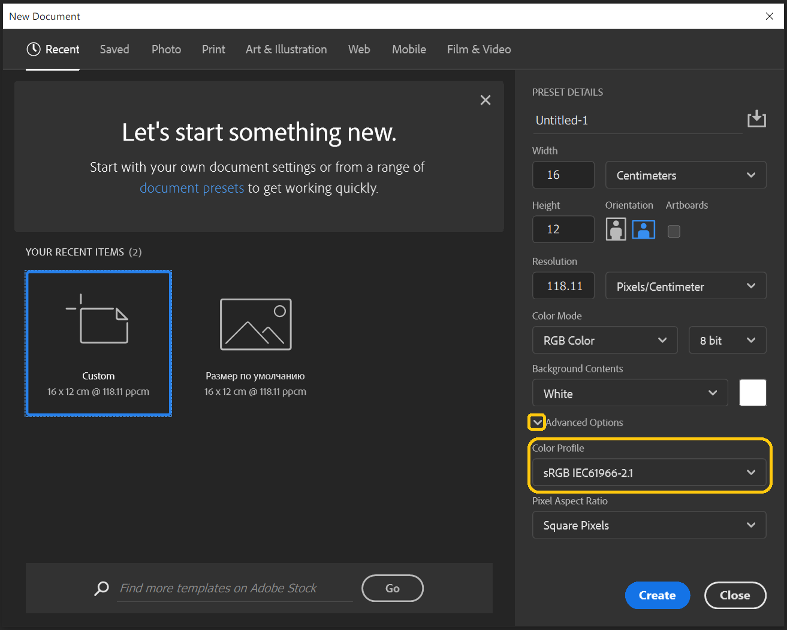
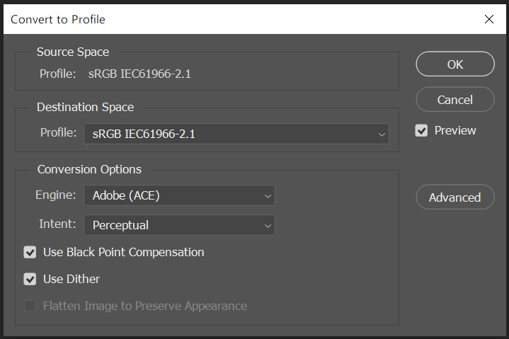

Preparing images for use with Citrus engine
Different monitors display the same colors differently. To make the image look almost the same on all devices, color profiles have been invented for images and displays. For image files that contain a color profile, color-managed applications convert colors from one color space to another. Photoshop and Windows Photos are examples of color-managed applications. Citrus and Paint are examples of applications without color management. They assume that a color profile of the image matches a display profile. If in fact the profiles do not match, we get distorted colors.
sRGB IEC 61966-2.1 is the most common color space. It is the color space that should be used to create images for Citrus engine. It looks pretty much the same on all displays.
When creating new images in Photoshop
When creating new images in the Photoshop, check the "Color Profile" field.

When you open an existing image in Photoshop
If an image was created in another profile, in Photoshop you can convert the image to sRGB IEC 61966-2.1 color space with Edit menu command: Edit->Assign Profile
The conversion options can be absolutely any, but the destination space is only sRGB IEC61966-2.1.
Might be useful
If you don't have Photoshop, you can view the current color profile of an image with the
exiftool console utility https://exiftool.org/.
To do this, use exiftool file.png command.
TODO: Write about XMP metadata, bpp, interlacing, palette support